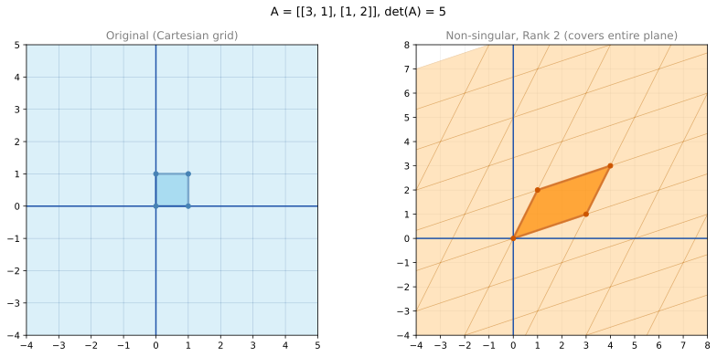
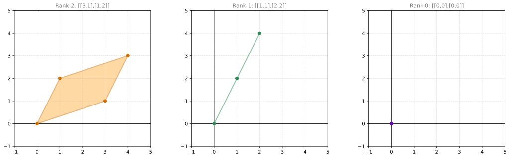
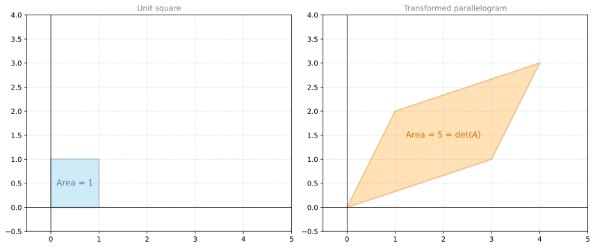
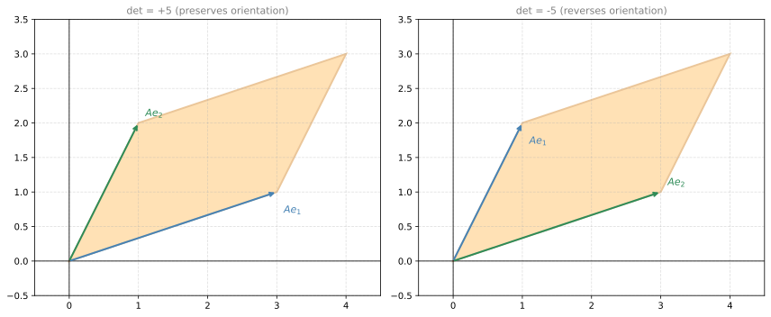
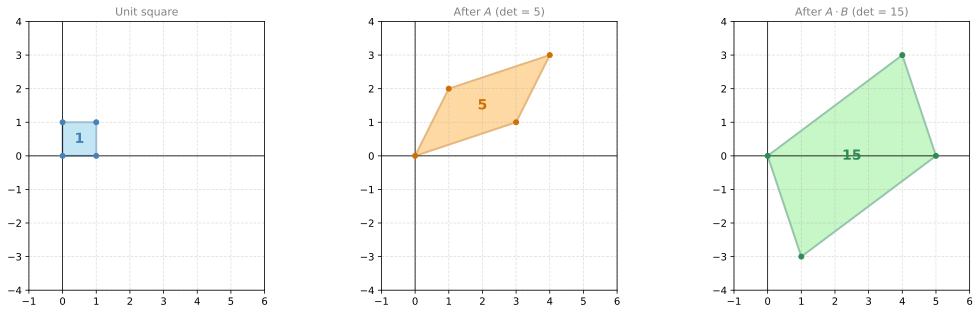

Determinants In-depth
linear-algebra
In the previous notes you learned what singular and non-singular matrices are, and you computed determinants as part of checking invertibility. Now you will see what these concepts mean through the lens of linear transformations. The determinant has a beautiful geometric interpretation: it measures how much a transformation stretches or shrinks space.
Singular and Non-Singular Transformations
Since matrices correspond to linear transformations, transformations can also be singular or non-singular. There is a very visual way to tell them apart.
Recall the matrix \(A = \begin{bmatrix} 3 & 1 \\ 1 & 2 \end{bmatrix}\) from the previous notes. It sends the blue unit-square grid on the left to the orange parallelogram grid on the right. One special thing about this transformation: the orange grid covers every single point on the plane. This is precisely the trait of a non-singular transformation. If the image (the set of all output points) covers the entire plane, the transformation is non-singular.
Now let’s look at the singular cases. Consider the matrix \(\begin{bmatrix} 1 & 1 \\ 2 & 2 \end{bmatrix}\). Let’s see what happens to the basis vectors:
\[\begin{bmatrix} 1 & 1 \\ 2 & 2 \end{bmatrix} \begin{bmatrix} 1 \\ 0 \end{bmatrix} = \begin{bmatrix} 1 \\ 2 \end{bmatrix} \qquad \begin{bmatrix} 1 & 1 \\ 2 & 2 \end{bmatrix} \begin{bmatrix} 0 \\ 1 \end{bmatrix} = \begin{bmatrix} 1 \\ 2 \end{bmatrix}\]
Both basis vectors map to the same point. The unit square does not become a parallelogram; it collapses into a line segment. The grid on the left gets sent to a single line on the right. The transformation cannot cover the entire plane, only a line. This is what makes it singular.
Finally, the zero matrix \(\begin{bmatrix} 0 & 0 \\ 0 & 0 \end{bmatrix}\) sends every vector to the origin. The entire plane collapses to a single point.

Review Questions
1. What is another name for the transformation that sends one basis to another in the plane?
TipAnswer
A change of basis. The linear transformation sends the standard basis (the unit square grid) to a new basis (the parallelogram grid), redefining the coordinate system.
Rank as Dimension of the Image
Notice the pattern:
| Matrix | Image | Dimension of image | Rank | Singular? |
|---|---|---|---|---|
| \(\begin{bmatrix} 3 & 1 \\ 1 & 2 \end{bmatrix}\) | Entire plane | 2 | 2 | No |
| \(\begin{bmatrix} 1 & 1 \\ 2 & 2 \end{bmatrix}\) | A line | 1 | 1 | Yes |
| \(\begin{bmatrix} 0 & 0 \\ 0 & 0 \end{bmatrix}\) | A point | 0 | 0 | Yes |
The rank of a matrix equals the dimension of the image of its linear transformation. A non-singular \(n \times n\) matrix always has rank \(n\) (the image is the full \(n\)-dimensional space). A singular matrix has rank less than \(n\) (the image collapses to a lower-dimensional subspace).
Determinant as Area
Now let’s connect this to the determinant. Take the matrix \(A = \begin{bmatrix} 3 & 1 \\ 1 & 2 \end{bmatrix}\) again. Its determinant is \(3(2) - 1(1) = 5\). The unit square on the left has area 1. The parallelogram on the right has area 5 (you can verify this by computing the cross product of the column vectors, or by adding and subtracting triangle areas). The determinant equals the area of the transformed unit square.
This is always the case: the absolute value of the determinant is the factor by which the transformation scales areas.

What about singular transformations?
- The matrix \(\begin{bmatrix} 1 & 1 \\ 2 & 2 \end{bmatrix}\) has determinant \(1(2) - 1(2) = 0\). The unit square collapses to a line segment, which has area 0.
- The zero matrix has determinant 0. The unit square collapses to a point, which also has area 0.
Whenever the determinant is zero, the transformation squishes space down to a lower dimension, and the “area” of the image is zero.
Negative Determinants and Orientation
What about negative determinants? Consider the matrix \(\begin{bmatrix} 1 & 3 \\ 2 & 1 \end{bmatrix}\), which has determinant \(1(1) - 3(2) = -5\). This is the same matrix as \(\begin{bmatrix} 3 & 1 \\ 1 & 2 \end{bmatrix}\) but with the columns swapped.
The absolute value \(|\det| = 5\) still gives the area of the parallelogram. The negative sign indicates that the transformation reverses orientation: the basis vectors end up in clockwise order instead of counterclockwise. Think of it as flipping the plane (like looking at it in a mirror).

In the left plot, \(Ae_1\) and \(Ae_2\) go counterclockwise (positive orientation). In the right plot, they go clockwise (negative orientation, determinant is negative).
To summarize:
| Dimension | \(|\det(A)|\) measures |
|---|---|
| \(\mathbb{R}^2\) | Area of the parallelogram formed by the column vectors |
| \(\mathbb{R}^3\) | Volume of the parallelepiped formed by the column vectors |
| \(\mathbb{R}^n\) | \(n\)-dimensional “volume” of the parallelotope |
The sign tells you about orientation:
- Positive: the transformation preserves the handedness of the basis
- Negative: the transformation reverses it (a reflection is involved)
- Zero: the transformation collapses space to a lower dimension (singular)
Properties of the Determinant
These properties follow naturally from the geometric interpretation.
Determinant of a Product
If you apply transformation \(A\) and then transformation \(B\), the combined scaling factor is the product of the individual scaling factors:
\[\det(AB) = \det(A) \cdot \det(B)\]
For example, take the matrices from the previous notes:
\[A = \begin{bmatrix} 3 & 1 \\ 1 & 2 \end{bmatrix}, \quad \det(A) = 5 \qquad B = \begin{bmatrix} 1 & 1 \\ -2 & 1 \end{bmatrix}, \quad \det(B) = 3\]
The product \(A \cdot B = \begin{bmatrix} 1 & 4 \\ -3 & 3 \end{bmatrix}\) has determinant \(1(3) - 4(-3) = 3 + 12 = 15\), which is exactly \(\det(A) \cdot \det(B) = 5 \times 3 = 15\).
Geometrically: \(A\) scales areas by 5, \(B\) scales areas by 3, so the combined transformation scales areas by 15.

Determinant of the Inverse
The inverse undoes the transformation, so it must undo the scaling:
\[\det(A^{-1}) = \frac{1}{\det(A)}\]
Continuing the example: \(\det(A) = 5\), so \(\det(A^{-1}) = \frac{1}{5}\). If \(A\) stretches areas by a factor of 5, then \(A^{-1}\) shrinks them back by a factor of \(\frac{1}{5}\) to restore the original size.
Determinant of the Transpose
\[\det(A^T) = \det(A)\]
Row Operations
| Operation | Effect on determinant |
|---|---|
| Swap two rows | Negates the determinant |
| Scale a row by \(c\) | Multiplies the determinant by \(c\) |
| Add a multiple of one row to another | Does not change the determinant |
Summary Table
| Property | Formula |
|---|---|
| Product | \(\det(AB) = \det(A)\det(B)\) |
| Inverse | \(\det(A^{-1}) = \frac{1}{\det(A)}\) |
| Transpose | \(\det(A^T) = \det(A)\) |
| Scalar multiple | \(\det(cA) = c^n \det(A)\) for \(n \times n\) matrix |
| Singular test | \(\det(A) = 0 \Leftrightarrow A\) is not invertible |
Review Questions
1. If \(\det(M) = 20\) and \(\det(N) = 10\) (where \(M\) and \(N\) have the same size), what is \(\det(M \cdot N)\) and \(\det(N^{-1})\)?
TipAnswer
\(\det(M \cdot N) = \det(M) \cdot \det(N) = 20 \times 10 = 200\).
\(\det(N^{-1}) = \frac{1}{\det(N)} = \frac{1}{10}\).
1. The product of a singular and a non-singular matrix (in any order) is:
TipAnswer
Singular. If one matrix has \(\det = 0\), then \(\det(AB) = \det(A) \cdot \det(B) = 0\), regardless of the other matrix’s determinant. Zero times anything is zero.
1. Find the determinant of the following matrix:
\[\begin{bmatrix} 0.4 & -0.2 \\ -0.2 & 0.6 \end{bmatrix}\]
TipAnswer
\(\det = 0.4(0.6) - (-0.2)(-0.2) = 0.24 - 0.04 = 0.2\).
1. Find the determinant of the following matrix:
\[\begin{bmatrix} 0.25 & -0.25 \\ -0.125 & 0.625 \end{bmatrix}\]
TipAnswer
\(\det = 0.25(0.625) - (-0.25)(-0.125) = 0.15625 - 0.03125 = 0.125\).
Review Questions
1. What geometric aspect of a linear transformation does the determinant quantify?
TipAnswer
The determinant quantifies how much stretching or shrinking the transformation produces. Specifically, \(|\det(A)|\) is the factor by which the transformation scales areas (in 2D) or volumes (in 3D). If \(|\det| > 1\), space is stretched. If \(|\det| < 1\), space is shrunk. The sign indicates whether the transformation preserves orientation (positive) or reverses it (negative).
1. Let \(T\) be a linear transformation in the plane represented by the matrix \(\begin{bmatrix} 1 & 0 \\ 2 & 3 \end{bmatrix}\). The rank of \(T\) is:
TipAnswer
The rank is 2. \(\det = 1(3) - 0(2) = 3 \neq 0\), so the matrix is non-singular. A non-singular \(2 \times 2\) matrix has rank 2 (the image is the full plane).
1. A linear transformation \(T\) maps the vectors as follows: \(T(1,0) = (3,1)\) and \(T(0,1) = (2,5)\). The area of the parallelogram spanned by transforming \((1,0)\) and \((0,1)\) is:
TipAnswer
The transformation matrix is \(A = \begin{bmatrix} 3 & 2 \\ 1 & 5 \end{bmatrix}\) (columns are the images of the basis vectors). The area of the parallelogram is \(|\det(A)| = |3(5) - 2(1)| = |15 - 2| = 13\).
1. Given the matrices:
\[M_1 = \begin{bmatrix} 2 & 1 \\ 3 & 1 \end{bmatrix}, \quad M_2 = \begin{bmatrix} 3 & 5 \\ 1 & 1 \end{bmatrix}, \quad M_3 = \begin{bmatrix} 2 & 3 \\ 4 & 5 \end{bmatrix}\]
The determinant of \(M_1 \cdot M_2 \cdot M_3\) is:
TipAnswer
\(\det(M_1 \cdot M_2 \cdot M_3) = \det(M_1) \cdot \det(M_2) \cdot \det(M_3)\).
\(\det(M_1) = 2(1) - 1(3) = -1\)
\(\det(M_2) = 3(1) - 5(1) = -2\)
\(\det(M_3) = 2(5) - 3(4) = -2\)
\(\det(M_1 \cdot M_2 \cdot M_3) = (-1)(-2)(-2) = -4\).
1. Let \(M\) and \(N\) be two square matrices with the same size. Which of the following statements are true?
- If \(M \cdot N\) is singular, then \(M\) and \(N\) are singular
- If \(M\) is singular, then \(M \cdot N\) is singular for any matrix \(N\)
- \(\det(M + N) = \det(M) + \det(N)\)
- If \(M\) and \(N\) are non-singular matrices, then so is \(M \cdot N\)
TipAnswer
The true statements are:
- “If \(M\) is singular, then \(M \cdot N\) is singular for any matrix \(N\).” Because \(\det(MN) = \det(M) \cdot \det(N) = 0 \cdot \det(N) = 0\).
- “If \(M\) and \(N\) are non-singular matrices, then so is \(M \cdot N\).” Because \(\det(MN) = \det(M) \cdot \det(N) \neq 0\) (product of two non-zero numbers is non-zero).
The false statements:
- “If \(M \cdot N\) is singular, then \(M\) and \(N\) are singular.” False. Only one of them needs to be singular for the product to be singular.
- “\(\det(M + N) = \det(M) + \det(N)\).” False. The determinant is not a linear function of matrices. For example, \(\det(I + I) = \det(2I) = 4 \neq 1 + 1\).
1. Let \(M = \begin{bmatrix} 0 & 0 & 1 \\ 2 & 2 & 1 \\ 1 & 0 & 0 \end{bmatrix}\). Compute \(\det(M^{-1})\).
TipAnswer
First find \(\det(M)\) using cofactor expansion along the first row:
\(\det(M) = 0 \cdot \det\begin{bmatrix} 2 & 1 \\ 0 & 0 \end{bmatrix} - 0 \cdot \det\begin{bmatrix} 2 & 1 \\ 1 & 0 \end{bmatrix} + 1 \cdot \det\begin{bmatrix} 2 & 2 \\ 1 & 0 \end{bmatrix}\)
\(= 0 - 0 + 1(0 - 2) = -2\)
Then \(\det(M^{-1}) = \frac{1}{\det(M)} = \frac{1}{-2} = -0.5\).